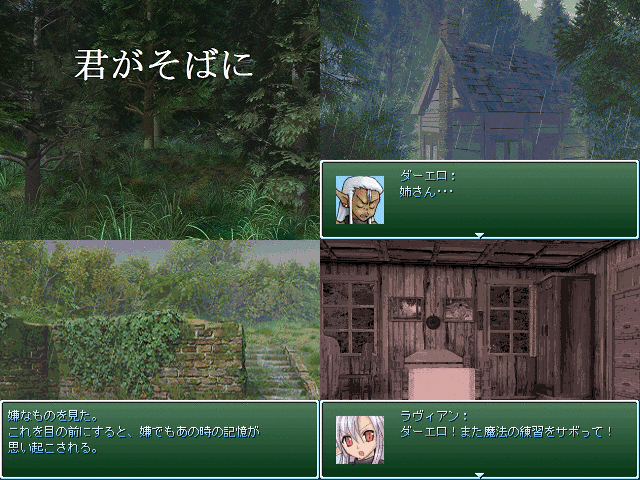

最高にCOOLな作者コメント：
第1話：君がそばに
400年振りに、故郷であった廃村を訪れたダーエロ。この地で彼が思うのは、1人の女性に対する恋心と、守ってやることのできなかった罪悪感･･･
第2話：辿り着いた果ての地で
天動説と地動説のどちらが正しいか。もしもの世界では未だ決着が着いていなかった。
地動説を主張していた恍惚なる闇は、自らの説を証明すべく、ダーエロ達とともに世界一周を目指し旅に出るのだが･･･
こちらは完成するか不明。紅白に回すかも
作品配信許可/動画公開許可：応相談
管理人コメント：
ダーエロは黙っていれば間違いなくイケメンの部類
↓この作品の感想を書く